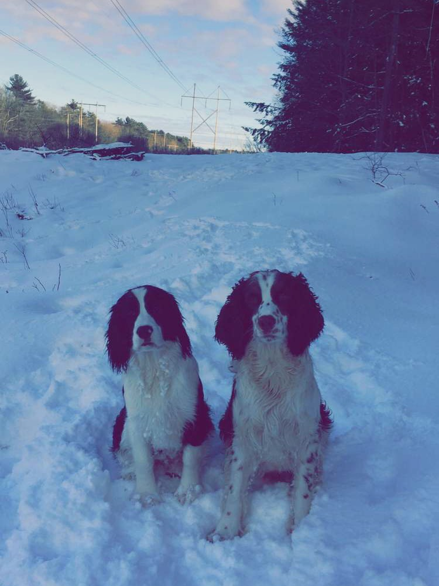
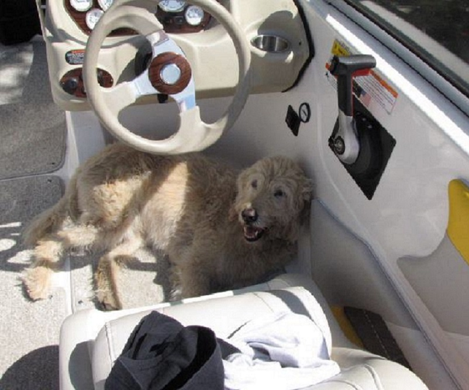

{font-style: italic } Hi all! You might think this is a web page about me. Well, it's actually about three amazing dogs. Their names are Tucker, Remy, and Cheerio. Cheerio was man's best friend literally. He passed away almost a year ago, but he will never be forgotten. Cheerio was my first puppy. Remy and Tucker are my best friend's dogs who he is allowing me to make a couple web pages on them. Remy is still a little puppy. He is cuddler if he isn't all wound up and wants to play. Tucker is 3 years old. One thing you need to know about Tucker is him and a tennis ball are inseparable. I love these three dogs, and get "puppy sick" if I don't have time with one of them.
 